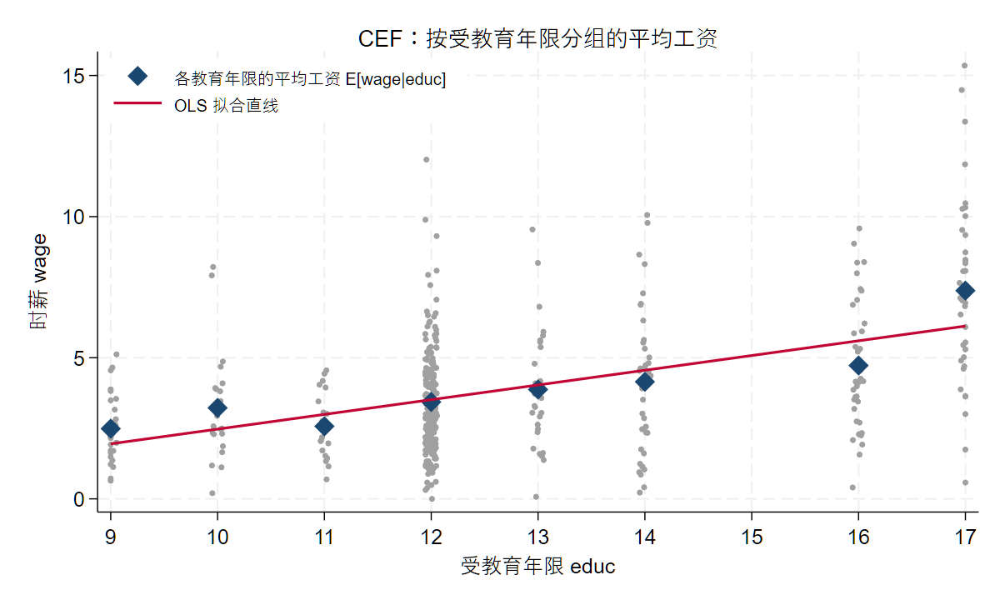
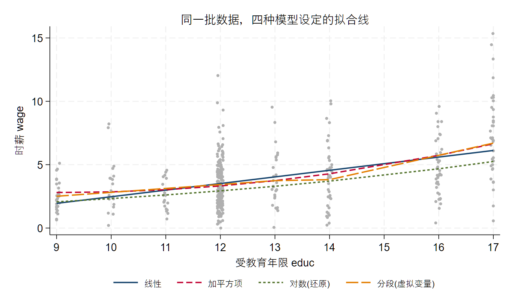
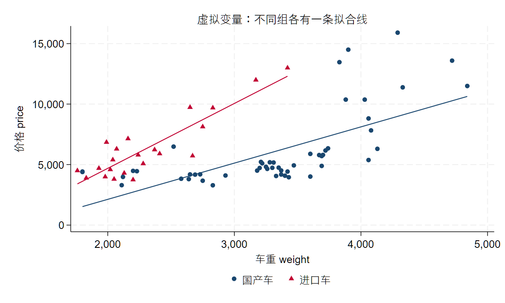
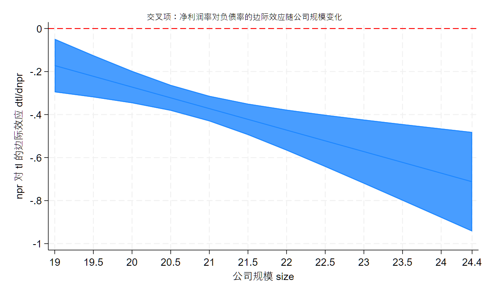
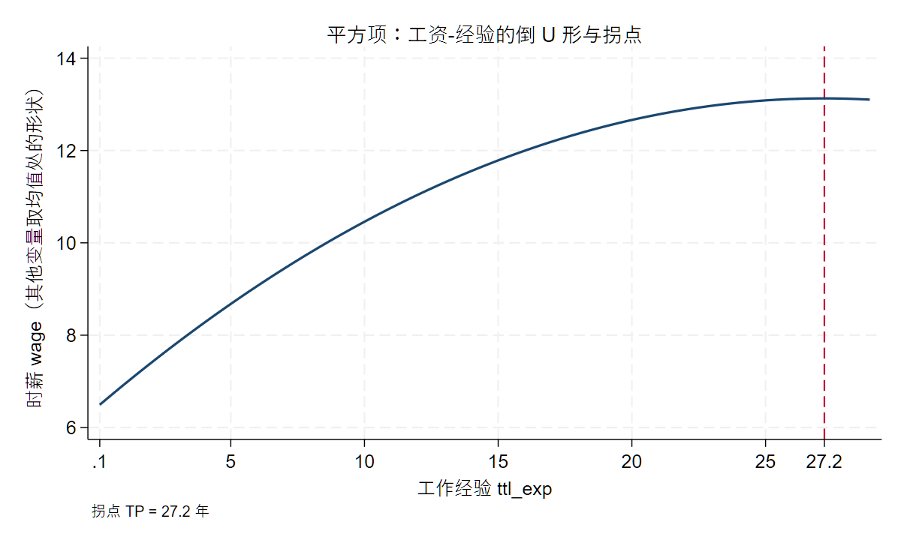
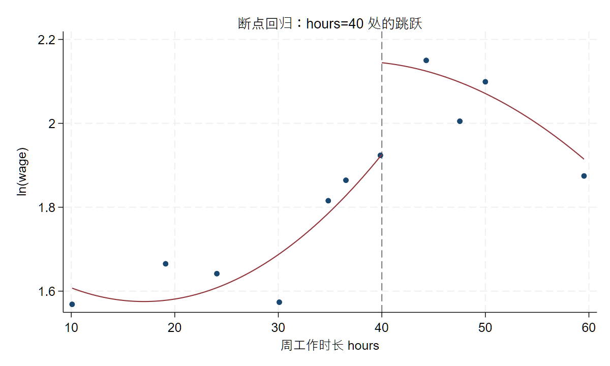

4 线性回归的建模语言：CEF、OLS 与统计推断
- 条件期望函数 (CEF) 与线性投影；
- OLS 系数的含义和局限；
- 回归系数不是简单的「影响」，而是在特定条件下形成的比较；
- 模型设定、函数形式和变量尺度；
- 对数模型、比例变量、标准化变量和系数解释；
- 交乘项与异质性：调节效应、边际效应与中心化 (承接大纲 A5，见「代码实操 · 交叉项」)；
- 断点回归 (RDD) 初步：用图形识别断点处的跳跃 (承接大纲 A5，见「代码实操 · 断点回归初步」)；
- 统计显著性、经济显著性和结果解释边界；
- 异方差稳健标准误与聚类稳健标准误；
- 如何阅读回归表中的系数、标准误、置信区间、显著性和样本量；
- 如何从回归表写出不过度解释的结果说明。
- 本讲用到的 skills：
core/05-regression-interpreter； - 可运行伴生文件：
examples/ch04/ch04_main.do(Stata；配套mroz.dta等数据随本讲一起提供)。
4.1 案例情境：一个系数，三种读法
先从一个几乎人人都跑过的回归说起。
手上是一份劳动经济学的经典数据 (mroz，421 位在业女性)，我们想看看教育和工资的关系，把时薪 wage 对受教育年限 educ 回归：
webuse mroz, clear
* 只保留在职女性(wage>0)，剔除个别极端高薪，并把人数过少的教育年限并组（详见下一节）
drop if wage==0
drop if wage>17
replace educ = 9 if educ<=9
replace educ = 14 if educ==15
reg wage educ------------------------------------------------------------------------------
wage | Coefficient Std. err. t P>|t| [95% conf. interval]
-------------+----------------------------------------------------------------
educ | 0.522 0.048 10.76 0.000 0.426 0.617
_cons | -2.744 0.624 -4.40 0.000 -3.971 -1.517
------------------------------------------------------------------------------
N = 421 F(1, 419) = 115.85 R-squared = 0.217 Root MSE = 2.11数据说明：
mroz是 Stata 自带的网络数据，用webuse mroz即可直接载入，无需下载。本讲用到的另外两份数据 (xtcs、B1_production) 随本仓库提供，用一个全局宏指到线上路径即可读取 (见「代码实操」开头)。
结果很干净：educ 的系数是 0.522，高度显著。写成方程就是
\[ \widehat{wage} = -2.74 + 0.52 \times educ \]
它大致意味着「受教育年限每多一年，时薪高约 0.52 美元」。
问题来了：这个 0.52，到底该怎么读？至少有三种读法——
- 读法一 (因果)：「让一个人多读一年书，她的时薪会上涨约 0.52 美元。」
- 读法二 (比较)：「在这份样本里，受教育多一年的那一批人，时薪平均高约 0.52 美元。」
- 读法三 (预测)：「知道一个人多读了一年书，我就把对她时薪的猜测调高约 0.52 美元。」
三种读法，数值一样，含义天差地别。读法一是因果断言，需要额外的识别假设才站得住；读法二只是描述性比较，是回归系数本本分分能给的东西；读法三则把回归当成一台预测机器。回归命令算出的那个数，本身并不告诉你该用哪一种读法。 把数值当成因果，是实证研究里最常见、也最隐蔽的过度解释。
这就是本讲要做的事：把「跑回归」变成「理解模型」。跑一个回归只要一行命令，但要说清楚那个系数是什么、能读到哪一步、不能读到哪一步，得先弄明白回归到底在估计什么。想清楚这件事，你写结果时才不会把「比较」误写成「影响」。
4.2 概念讲解：回归到底在估计什么
4.2.1 条件期望函数：按 X 分组求平均
抛开公式，先看回归在直觉上做了一件什么事。
还是教育和工资。为了把「分组平均」看清楚，我们先对数据做一点基础清理 (这也是上一段代码里那几行预处理在做的事)：只留在职女性、剔掉个别极端高薪、把人数太少的教育年限并到相邻组，剩下 421 位、8 个教育档位。然后按受教育年限分组，算出每一组的平均时薪：
webuse mroz, clear
drop if wage==0
drop if wage>17
replace educ = 9 if educ<=9
replace educ = 14 if educ==15
bysort educ: egen wage_m = mean(wage) // 每个 educ 组的平均 wage受教育年限 educ |
9 | 10 | 11 | 12 | 13 | 14 | 16 | 17 |
|---|---|---|---|---|---|---|---|---|
平均时薪 wage_m |
2.5 | 3.2 | 2.6 | 3.4 | 3.9 | 4.1 | 4.7 | 7.4 |
这张表在说一件朴素的事：给定受教育年限，这一组人的平均时薪是多少。 读过 12 年书的人，平均时薪 3.4；读过 16 年的，4.7。把每一组的平均值画成一个点，就得到下面这张图里的深蓝菱形——这些「在每个 X 上、Y 的平均值」的点，就是条件期望函数 (Conditional Expectation Function，CEF)：

CEF 用记号写出来特别简洁：
\[ \mathbb{E}[Y \mid X = x] = m(x) \]
意思是「在 \(X=x\) 这一组里，\(Y\) 的平均值」，它是 \(x\) 的一个函数 \(m(x)\)。放到我们的例子里，
\[ \mathbb{E}[wage \mid educ = 12] = m(12) = 3.4 \]
用 Stata 求某一组的 CEF，其实就是求一个条件均值——下面两条命令给出的常数项是一回事：
sum wage if educ==12 // 直接求 educ=12 这组的平均 wage
reg wage if educ==12 // 只含常数项的回归，截距 = 该组均值CEF 是回归真正的估计目标。我们关心教育和工资的关系，本质上就是想知道：从一个受教育水平挪到另一个，平均工资怎么变。 这正是 CEF 描述的东西。
把观测值和 CEF 的关系写清楚，就得到建模的出发点。任何一个 \(Y_i\)，都可以拆成「它所在组的平均值」加「一个偏离」：
\[ Y = m(X) + e, \qquad \mathbb{E}[e \mid X] = 0, \qquad \mathbb{E}[e^{2} \mid X] = \sigma^{2}(X) \]
- \(\mathbb{E}[e \mid X]=0\) 是 CEF 的定义带来的：既然 \(m(X)\) 是每组的平均，组内的偏离自然平均为零；
- \(\mathbb{E}[e^{2}\mid X]=\sigma^{2}(X)\) 说的是每组内部的离散程度，它可以随 \(X\) 变化——这一点后面讲异方差时会回来用到。
4.2.2 回归估计的就是 CEF
上面这条 CEF(8 个深蓝点) 和我们一开始跑的那条 OLS 直线 (红线) 到底什么关系？一个小实验能把它讲透。
我们分别跑三个回归：(1) 对全部 421 个个体回归；(2) 只对 8 个分组平均值回归；(3) 对 8 个分组平均值回归、但按每组人数加权 (aweight)：
reg wage educ // (1) 个体回归
reg wage_m educ // (2) 只用 8 个组均值
reg wage_m educ [aweight = Nj] // (3) 组均值，按组容量 Nj 加权------------------------------------------------------------
(1) (2) (3)
individual groupmean groupmean_aw
------------------------------------------------------------
educ 0.522*** 0.497** 0.522**
(0.048) (0.102) (0.103)
_cons -2.744*** -2.361 -2.744
(0.624) (1.334) (1.331)
------------------------------------------------------------
N 421 8 8
------------------------------------------------------------看第 (1) 列和第 (3) 列：斜率都是 0.522，截距都是 −2.744，一模一样。这不是巧合——对个体做 OLS，等价于对各组的条件均值 (CEF 点) 做加权回归，权重就是每组的人数。 换句话说，OLS 并没有去拟合那一大片散点，它真正在拟合的，是那 8 个 CEF 点。这就是「回归估计的是 CEF」这句话最直接的证据。
(第 (2) 列不加权，把人数悬殊的组一视同仁，斜率略有偏离——这也说明权重不是可有可无的。)
4.2.3 线性投影：给 CEF 选一条直线
CEF 未必是直的。看 图 4.1：从 12 年到 13 年只涨了一点，从 16 年到 17 年却猛跳。如果每一段都单独估计，既费数据又难解释。于是我们退一步，用一条直线去逼近这条 CEF：
\[ \mathbb{E}[Y \mid X] \approx \alpha + \beta X \]
这条「最能贴合 CEF 的直线」有个名字，叫线性投影。它不是假装 CEF 真的是直线，而是承认「我用一条直线来近似它」。怎么算出这条直线？OLS 的办法是让所有点到直线的竖直距离平方和最小，即最小化残差平方和 (Residual Sum of Squares, RSS)：
\[ \min_{\alpha,\ \beta}\ \ \text{RSS} = \sum_{i=1}^{N}\big(y_i - \alpha - \beta x_i\big)^2 \]
求解出来，斜率有一个很直观的形式——它就是 \(x\) 与 \(y\) 的样本协方差除以 \(x\) 的样本方差：
\[ \hat{\beta} = \frac{\sum_i (x_i - \bar{x})(y_i - \bar{y})}{\sum_i (x_i - \bar{x})^2}, \qquad \hat{\alpha} = \bar{y} - \hat{\beta}\,\bar{x} \]
拿到 \(\hat\alpha,\hat\beta\)，每个观测的拟合值与残差分别是
\[ \hat{y}_i = \hat{\alpha} + \hat{\beta} x_i, \qquad \hat{e}_i = y_i - \hat{y}_i \]
上面那个 0.52，就是用一条直线概括「教育每多一年、平均时薪大约高多少」的结果。公式服务于直觉：只要记住「回归 = 用直线概括 CEF」，就抓住了这一讲的地基。
4.2.4 换一个 f(·)，就是换一个模型
「用直线逼近 CEF」只是最简单的一种选择。CEF 本身是弯的，我们完全可以用别的函数形式 \(f(\cdot)\) 去逼近它。事实上，本讲后面要讲的各种模型，都是在给同一条 CEF 选不同的 \(f(\cdot)\)：
\[ \begin{aligned} &(1)\quad wage_i = \alpha + \beta\, educ_i + e_i && \text{(线性)}\\ &(2)\quad wage_i = \alpha + \beta_1 educ_i + \beta_2\, educ_i^{2} + e_i && \text{(平方项：允许弯曲)}\\ &(3)\quad \ln(wage_i) = \alpha + \beta\, educ_i + e_i && \text{(对数：改变尺度)}\\ &(4)\quad wage_i = \alpha + \beta\, educ_i + \gamma D_i + \theta\,(D_i\!\times\! educ_i) + e_i && \text{(虚拟变量 + 交叉项)} \end{aligned} \]
其中 (4) 里 \(D_i=\mathbf{1}(educ_i>16)\) 是一个 0/1 变量。这四个模型形式不同，但分析的都是同一样东西——条件期望 CEF，只是对 \(m(\cdot)\) 的形状做了不同假设。
把这四种设定的拟合线画在同一张散点图上，差别一目了然 (图 4.2)：线性是一条直线，平方项让它可以弯曲，对数 (换算回工资尺度后) 在高教育端更平缓，分段设定则在某个门槛处折一下。同一批数据，选不同的 \(f(\cdot)\)，得到的拟合值就不一样——这正是「模型设定」四个字最直观的样子。
* 四种设定各自的拟合值，叠在一张图上
reg wage educ
predict yhat_lin // (1) 线性
reg wage educ c.educ#c.educ
predict yhat_quad // (2) 平方项
reg lwage educ
predict lyhat
gen yhat_log = exp(lyhat) // (3) 对数：换算回 wage 尺度
gen Dhi = (educ>13)
reg wage c.educ##i.Dhi
predict yhat_dum // (4) 分段（虚拟变量）
twoway (scatter wage educ, mcolor(gs11) msize(vsmall)) ///
(line yhat_lin educ) (line yhat_quad educ) ///
(line yhat_log educ) (line yhat_dum educ), sort
想清楚这一点，本讲后面「函数形式」「对数模型」「交叉项」「平方项」几节就不再是零散的技巧，而是同一个问题的不同侧面：你打算用什么形状的 \(f(\cdot)\)，去描述 X 和 Y 的条件均值关系。
把「条件期望 \(\mathbb{E}[Y\mid X]\)」换成「条件中位数」或其它分位数，就得到分位数回归；换成「条件概率 \(P(Y=1\mid X)\)」，就得到 Logit / Probit 这类模型。同一套「给定 X、看 Y 的某个特征」的思路，衍生出一大家子模型。 本讲只走条件期望这一支，其余留待各自的专题。
4.2.5 OLS 是估计方法，不是模型
这里要澄清一个常见的糊涂账：OLS 不是一个模型，而是一种估计方法。
顺序是这样的。我们先有一个假设——X 和 Y 的条件期望呈线性关系：
\[ \mathbb{E}[Y \mid X] = \alpha + \beta X \tag{1} \]
注意，(1) 式是假设，没法直接拿数据去估。结合前面 \(Y = m(X)+e\)，把 (1) 代进去，就得到常见的回归模型的设定：
\[ Y_i = \alpha + \beta X_i + e_i \tag{2} \]
到这里还只是模型。怎么把其中的 \(\alpha\)、\(\beta\) 估出来，有很多办法：
- OLS：假设 \(x\) 与 \(e\) 不相关，最小化残差平方和 \(\sum e_i^2\)；
- MLE：假设 \(e\) 服从正态分布，即 \(e_i \sim N(0, \sigma^2)\)，最大化似然函数 \(\prod_i \frac{1}{\sqrt{2\pi\sigma^2}} \exp\left(-\frac{e_i^2}{2\sigma^2}\right)\)；
- GMM：构造矩条件 \(\mathbb{E}[x\,e]=0\)，进而得到样本矩条件 \(\frac{1}{n}\sum x_i e_i = 0\)，最小化加权矩条件的平方和或加权平方和。
它们是三种不同的估计方法，估的却是同一个模型 (2)。所以「OLS」和「线性回归模型」是两件事：一个是路径，一个是目的地。想清楚这一点，后面遇到「同一个模型换一种估计方法」(比如面板里的固定效应、工具变量) 时，就不会打结。
4.2.6 系数的含义与局限
回到那个 \(\beta\)。它到底是什么？
\(\beta\) 是线性投影的斜率，含义是：\(X\) 每增加一单位，\(Y\) 的平均值大约变化 \(\beta\)。 注意落点在「平均值」——它说的不是某一个具体个体，而是「X 相差一单位的两群人之间，Y 的平均差异」。
但这个解释有前提。OLS 要把 \(\beta\) 估得没有系统偏差，靠的是一个关键假设：
\[ \mathbb{E}[e \mid X] = 0 \]
即那些没进模型的因素 \(e\)，与 \(X\) 不相关。一旦 \(X\) 和 \(e\) 相关 (比如「能力」既影响教育、又影响工资，却没进模型)，估出的 \(\hat\beta\) 就不再是我们想要的那条 CEF 斜率了。这正是「内生性」的起点，也是后面几讲要反复处理的核心问题；本讲先把系数在「干净情形」下的含义讲透。
4.2.7 系数是「比较」，不是「影响」
有了上面的铺垫，就能回答案例情境里那个问题了：0.52 该怎么读？
严格说，它是一个比较：在这份样本里，受教育多一年的那群人，平均时薪高约 0.52。它比较的是两群不同的人 (多读一年的 vs 少读一年的)，而不是「把同一个人的教育年限拨高一年」会发生什么。
这两者的区别是实证解释的命门。「多读一年书的人工资更高」是数据里的事实；「多读一年书会让工资更高」是一个因果断言。后者要成立，得保证「受教育多和少的两群人，除了教育之外其它方面都可比」——而现实中他们往往在能力、家庭、机会上系统性地不同。回归系数天然给你的是比较，要把比较升级成因果，需要额外的识别假设，那是回归命令本身给不了的。
一句话记住：系数刻画的是「特定条件下形成的比较」，不是「影响」。 写结果时，把「导致 / 提升 / 影响」这类因果动词，换成「相关 / 更高 / 在控制……之后」这类比较措辞，往往才是诚实的表述。这条护栏，本讲后面还会专门演示怎么落到笔头，以及怎么让 AI 帮你把关。
4.2.8 多元回归：系数是「控制其他变量之后」的比较
前面都是一个自变量。真实研究里，我们会往回归里加控制变量。加了之后，系数的含义会再精细一层——有时还会面目全非。
换一份 Stata 自带数据 nlsw88(1988 年美国女性)，看一个更有戏剧性的例子。我们想知道「在本单位任职越久 (tenure)，工资是不是越高」，先只放 tenure，再逐步加入总工龄 ttl_exp 和受教育程度 grade：
sysuse nlsw88, clear
eststo clear
eststo n1: reg wage tenure
eststo n2: reg wage tenure ttl_exp
eststo n3: reg wage tenure ttl_exp grade
esttab n1 n2 n3, se star(* 0.10 ** 0.05 *** 0.01) r2 ///
mtitle("只放 tenure" "+总工龄" "+受教育")--------------------------------------------------------
只放 tenure +总工龄 +受教育
--------------------------------------------------------
tenure 0.186*** 0.041 0.038
(0.022) (0.026) (0.025)
ttl_exp 0.301*** 0.233***
(0.031) (0.030)
grade 0.649***
(0.046)
_cons 6.681*** 3.772*** -3.864***
--------------------------------------------------------
N 2231 2231 2229
--------------------------------------------------------只看第一列，任职年限每多一年、工资高约 0.19，高度显著。但一旦控制住总工龄，tenure 的系数骤降到 0.04、而且不再显著！原因不难理解：在本单位待得久的人，往往总的工作经验也长 (两者相关系数约 0.58)，第一列里 tenure 的系数其实「捞」走了大半本属于经验的功劳。控制总工龄后，tenure 的系数才回到它真正的含义——「在总工龄相同的人之间，多在本单位待一年对应的工资差异」，这个「纯任职」的效应其实很小。
这就是多元回归里每个系数的本质：「其它变量给定不变时」的比较，即所谓偏效应：
\[ \beta_j = \frac{\partial\, \mathbb{E}[Y \mid X]}{\partial X_j} \]
系数从 0.19 掉到 0.04 不是算错，而是问题变了——第一列问「任职久的人工资高不高」，后面几列问「经验一样、只是任职更久，工资差多少」。「设定一变，系数就变」是回归的常态：你每改一次模型、多控制一个变量，问的都是一个略有不同的问题，系数自然跟着变。这条线索，在本讲后面讲交叉项时会看得最极端 (系数甚至会变号)。而「加入控制变量后系数为什么变、变了多少」这个更一般的问题，背后有一套简洁的几何解释 (FWL 定理)，留到下一讲专门展开。
4.3 代码实操
概念讲清楚了，这一节动手。代码以 Stata 为主，静态展示、输出已冻结；你把 examples/ch04/ch04_main.do 下载下来就能一段段复跑。
本讲用到几份数据，读取方式分两类：mroz、nlsw88、auto 是 Stata 自带的，用 webuse / sysuse 直接载入；xtcs、B1_production 随本仓库提供，先用一个全局宏指到线上路径，再 use 即可，无需下载到本地：
global D "https://raw.githubusercontent.com/lianxhcn/PXa2026a/main/examples/ch04/data"
* 之后： use "$D/xtcs.dta", clear // 联网直接读；也可把 $D 改成本地路径4.3.1 跑第一个回归：从命令到拟合值
回归只要一行 reg y x。跑完之后，Stata 在内存里留下了拟合值和残差，用 predict 取出来 (沿用前面清理后的 mroz 样本)：
webuse mroz, clear
drop if wage==0 | wage>17
replace educ = 9 if educ<=9
replace educ = 14 if educ==15
reg wage educ
predict wage_hat // 拟合值 y-hat = -2.74 + 0.52*educ
predict e_hat, residual // 残差 e-hat = y - y-hat
list wage wage_hat e_hat in 1/3, clean拟合值 \(\hat{y}_i=\hat\alpha+\hat\beta x_i\) 是模型对第 \(i\) 个人的「预测」，残差 \(\hat{e}_i=y_i-\hat{y}_i\) 是预测与实际的差。OLS 的目标 (最小化 \(\sum \hat{e}_i^2\)) 保证了这些残差平方和最小，也保证了 \(\sum\hat{e}_i=0\)、且残差与自变量不相关。图 4.1 里那条红线就是拟合线，每个灰点到红线的竖直距离就是它的残差。
4.3.2 读懂一张回归表
做研究时，我们很少只跑一个模型。把几个模型并排放进一张表，是论文的标准做法。用 esttab(estout 包) 可以一键生成：
eststo clear
eststo m1: reg wage educ
eststo m2: reg wage educ exper
esttab m1 m2, se star(* 0.10 ** 0.05 *** 0.01) r2 mtitle("模型1" "模型2")--------------------------------------------
模型1 模型2
--------------------------------------------
educ 0.522*** 0.524***
(0.048) (0.048)
exper 0.051***
(0.013)
_cons -2.744*** -3.448***
(0.624) (0.637)
--------------------------------------------
N 421 421
R-sq 0.217 0.247
--------------------------------------------
Standard errors in parentheses
* p<0.10 ** p<0.05 *** p<0.01一张回归表要会读五样东西：
- 系数 (0.524)：偏效应，前面讲过——「其它变量不变时，X 多一单位、Y 平均差多少」；
- 标准误 (括号里的 0.048)：这个系数估计的不确定性有多大，越小越精确 (下一小节细讲)；
- 星号 (***)：显著性，星越多，系数越不可能只是偶然 (
***表示 \(p<0.01\))； - 样本量 N(421)：这张表是用多少个观测算出来的——换了模型若 N 变了，往往是某个变量有缺失，结论的可比性就打了折扣；
- \(R^2\)(0.247)：模型解释了 Y 变动的百分之多少。\(R^2\) 不是越高越好，也不能用来判断因果，本讲不展开。
系数和标准误还能拼出置信区间：\(\hat\beta \pm 1.96\times se(\hat\beta)\)，给出「这个系数大致落在哪个区间」。这五样东西连起来，才是一张回归表完整的信息。
4.3.3 换个单位，系数会变吗：变量的尺度
初学者常有的困惑：把工资从「美元」换成「美分」，或把教育从「年」换成「月」，系数会不会变？会，但变的只是数字，不是结论。
gen wage_cents = wage*100 // 工资改用美分
gen educ_months = educ*12 // 教育改用月
reg wage educ // 原始
reg wage_cents educ // 因变量 ×100
reg wage educ_months // 自变量 ×12| 模型 | educ(或 educ_months) 系数 |
t 值 | \(R^2\) |
|---|---|---|---|
wage on educ |
0.522 | 10.76 | 0.217 |
wage_cents on educ |
52.15 | 10.76 | 0.217 |
wage on educ_months |
0.043 | 10.76 | 0.217 |
规律很干净：因变量放大 100 倍，系数就放大 100 倍 (0.522→52.15)；自变量放大 12 倍，系数就缩小到 1/12(0.522→0.043)。但 t 值、显著性、\(R^2\) 完全不变——因为尺度变换不改变「教育和工资的关系」本身，只改变了度量单位。所以看到一个系数，第一件事是问清楚：Y 和 X 各是什么单位？ 0.043(每月) 和 0.522(每年) 说的是同一件事。
4.3.4 对数与标准化：系数怎么读
在第 2 讲我们已经学过怎么对变量取对数、做标准化。这里补上最要紧的一环：变换之后，系数该怎么读。 不同的变换，读法完全不同。
其一，对数-水平 (log-level)：半弹性。 把因变量取对数、自变量不变：
reg lwage educ // lwage = ln(wage) lwage | Coefficient Std. err. t P>|t|
educ | 0.116 0.015 7.92 0.000系数 0.116 要读成百分比：受教育每多一年，工资大约高 \(100\times0.116=11.6\%\)。这类模型里，\(\beta\) 是「X 每增一单位，Y 变化百分之几」，叫半弹性。
其二，对数-对数 (log-log)：弹性。 X 和 Y 都取对数，系数就是弹性——X 变化 1%，Y 变化百分之几。用生产函数数据 (B1_production) 估柯布-道格拉斯生产函数最典型：
use "$D/B1_production.dta", clear // $D 见本节开头
reg lnY lnL lnK // ln产出 对 ln劳动、ln资本 lnY | Coefficient Std. err. t P>|t|
lnL | 0.603 0.126 4.79 0.000
lnK | 0.376 0.085 4.40 0.000lnL 的系数 0.603 读成：劳动投入每增加 1%，产出大约增加 0.60%；资本的产出弹性是 0.38。两者相加约等于 0.98，接近 1，说明这个行业大致是「规模报酬不变」——这类判断，正是弹性系数的用武之地。
其三，标准化系数：以标准差为单位比较。 不同自变量单位不同 (教育按年、经验也按年、但收入按元)，系数大小没法直接比谁更「重要」。给 reg 加 beta 选项，得到标准化系数：
webuse mroz, clear
drop if wage==0 | wage>17
reg lwage educ exper, beta lwage | Coefficient Std. err. t P>|t| Beta
educ | 0.108 0.013 8.14 0.000 0.361
exper | 0.019 0.004 4.93 0.000 0.219标准化系数 (Beta 列) 读成：X 每增加一个标准差，Y 变化几个标准差。这里 educ 的 0.361 大于 exper 的 0.219，说明在这份数据里，教育对工资的相对解释力更强。要比较不同变量的相对重要性，才用标准化系数；解释单个变量的实际效应，还是用原始系数更直观。
4.3.5 因子变量：把类别放进回归
性别、行业、地区这类类别变量，不能直接当数字放进回归——它们的取值 1、2、3 没有大小含义。正确做法是转成虚拟变量 (0/1)。Stata 用因子变量前缀 i. 一步到位：
sysuse auto, clear
reg price i.foreign weight // i.foreign：以国产车为基准，进口车设一个虚拟变量 price | Coefficient Std. err. t P>|t|
foreign |
进口车 | 3637.001 668.583 5.44 0.000
weight | 3.321 0.396 8.39 0.000
_cons | -4942.844 1345.591 -3.67 0.000i.foreign 自动以「国产车」为基准组，报告的是「进口车 vs 国产车」的差异：车重相同时，进口车平均贵 3637 美元。 虚拟变量在几何上就是平移截距——两组共用一个斜率 (weight 的 3.32)，但各有各的高度。
要是两组连斜率也不同呢？用 ## 让虚拟变量和连续变量交互：
reg price i.foreign##c.weight // 允许两组截距、斜率都不同这时进口车与国产车各有一条自己的拟合线 (图 4.3)：进口车不但整体更贵，而且价格随车重上涨得更快 (斜率更陡)。这已经用到了下一小节的主角——交叉项。画出来看得最清楚：
twoway (scatter price weight if foreign==0, mcolor(navy) msymbol(O)) ///
(scatter price weight if foreign==1, mcolor(cranberry) msymbol(T)) ///
(lfit price weight if foreign==0, lcolor(navy)) ///
(lfit price weight if foreign==1, lcolor(cranberry)), ///
legend(order(1 "国产车" 2 "进口车") rows(1) pos(6)) ///
xtitle("车重 weight") ytitle("价格 price")
4.3.6 交叉项：让边际效应随另一个变量变
到目前为止，X 对 Y 的边际效应都是一个固定的数 (比如教育回报 0.52，人人一样)。但现实中，一个变量的效应常常取决于另一个变量。交叉项 (交乘项) 就是用来刻画这件事的。
从「变系数」的角度看最清楚。原来我们假设斜率固定：
\[ y_i = \alpha + \beta\, x_i + \varepsilon_i \]
现在放松它，让斜率本身随另一个变量 \(z\)(调节变量) 变化：
\[ y_i = \alpha + \beta_i\, x_i + \varepsilon_i, \qquad \beta_i = f(z_i) \]
于是 \(x\) 对 \(y\) 的边际效应不再是常数，而是 \(z\) 的函数：
\[ \frac{\partial y_i}{\partial x_i} = \beta_i = f(z_i) \]
最简单地，设 \(f\) 是线性的，\(\beta_i = \gamma_0 + \gamma_1 z_i\)，代回原式：
\[ y_i = \alpha + (\gamma_0 + \gamma_1 z_i)\, x_i + \varepsilon_i = \alpha + \gamma_0\, x_i + \gamma_1\,(x_i \cdot z_i) + \varepsilon_i \]
\(x_i\cdot z_i\) 这一项就是交叉项。它的系数 \(\gamma_1\) 刻画「\(z\) 每高一单位，\(x\) 的边际效应变化多少」。
举个财务学的例子 (数据 xtcs，中国上市公司)：盈利能力 npr(净利润率) 对负债率 tl 的影响，会不会随公司规模 size 而不同？先不加交叉项，再加上：
use "$D/xtcs.dta", clear // $D 见本节开头
xtset code year
global zz "tang fr ndts L.tobin i.year"
reg tl npr size $zz, robust // 不含交叉项
reg tl npr size c.npr#c.size $zz, robust // 含交叉项 不含交叉项 含交叉项
npr -0.371 1.729**
size 0.033 0.040***
c.npr#c.size -0.100**于是 npr 对 tl 的边际效应是
\[ \frac{\partial\, tl}{\partial\, npr} = 1.729 - 0.100 \times size \]
用 margins 和 marginsplot 把它画出来 (图 4.4)：公司规模越大，盈利能力对负债率的 (负向) 作用越强。
reg tl npr size c.npr#c.size $zz, robust
margins, dydx(npr) at(size=(19(1)24)) // 不同 size 处 npr 的边际效应
marginsplot // 画出来，带 95% 置信区间
npr 对 tl 的边际效应随公司规模 size 变化 (阴影为 95% 置信区间)
这里有一个必须讲清的坑。 注意上表里，npr 的系数从不含交叉项时的 \(-0.371\)，变成含交叉项时的 \(+1.729\)——连符号都反了！ 这不是算错，而是含义变了。在交叉项模型里，一阶项 npr 的系数是
\[ \gamma_0 = \left.\frac{\partial\, tl}{\partial\, npr}\right|_{size=0} \]
也就是「当 \(size=0\) 时」的边际效应。可公司规模 size 根本不可能取 0(样本里都在 21 附近)，所以这个 \(+1.729\) 是一个外推到数据之外的、没有现实意义的数。
由此引出两条要点：
- 模型里有交叉项 \(x\cdot z\)，就必须同时放入 \(x\) 和 \(z\) 两个一阶项，否则边际效应就算错了；
- 加了交叉项后，一阶项系数的含义变了，不能再和「不含交叉项」时的系数直接比较。
中心化是缓解第 2 点的常用手段：把 \(z\) 减去它的均值再构造交叉项，一阶项系数就变成「在 \(z\) 取均值处」的边际效应，好解释、也和不含交叉项时可比。但要强调：中心化不改变交叉项系数本身，也不影响任何统计推断，它纯粹是为了让系数好读——所以是可选项，不是必须做的一步。
上面假设 \(\beta_i = \gamma_0 + \gamma_1 z_i\) 是 \(z\) 的线性函数。真实的交互效应未必这么规矩，可能是非线性的、或只在某段 \(z\) 上存在。诊断这类问题有专门的工具 (如 interflex)，属于进阶内容，本讲不展开。
4.3.7 平方项：允许先升后降
平方项是一种特殊的交叉项——变量和它自己交乘 (\(x\cdot x = x^2\))。它让「直线」变成「抛物线」，从而能刻画先升后降 (或先降后升) 的关系。
工资和工作经验就是典型：入职头些年经验值钱、工资涨得快；到了一定年头，经验的边际回报递减，工资涨势放缓甚至回落。用 nlsw88 数据，把经验的平方项放进去：
sysuse nlsw88, clear
gen ttl_exp2 = ttl_exp^2
reg wage ttl_exp ttl_exp2 hours age tenure married south i.race wage | Coefficient Std. err. t P>|t|
ttl_exp | 0.492 0.110 4.49 0.000
ttl_exp2 | -0.009 0.005 -1.99 0.046一阶项为正 (\(+0.49\))、平方项为负 (\(-0.009\))，合起来就是一条开口向下的抛物线 (图 4.5)。对于 \(y=a x^2 + b x + c\) 这样的二次式，两个量最有用：
\[ \text{边际效应：}\ \frac{\partial y}{\partial x} = b + 2a x, \qquad \text{拐点：}\ x^{*} = -\frac{b}{2a} \]
代入本例，拐点在
\[ x^{*} = -\frac{0.492}{2\times(-0.009)} \approx 27.2 \ \text{年} \]
也就是说，经验到约 27 年时工资达到顶点，之后开始回落。
di -_b[ttl_exp]/(2*_b[ttl_exp2]) // 算拐点：27.2
但拐点要小心解读。 本例样本里工作经验最多也就 28.9 年，绝大多数人 (均值 12.5 年) 都落在拐点左侧的上升段。换句话说，「27 年后工资回落」这个结论，是靠极少数长经验样本外推出来的，实际意义有限。看到一个漂亮的倒 U 形，先问一句：拐点落在数据范围之内吗？有多少样本真的越过了它？ 否则很容易把一个数据稀薄处的外推，讲成一个像模像样的「倒 U 型规律」。
4.3.8 断点回归初步：用 binscatter 看断点处的跳跃
平方项让我们能刻画「弯曲」的关系。把这个思路再推一步，就能看到一种很有用的因果推断设计——断点回归 (Regression Discontinuity Design, RDD)。这里只做一个直观的演示，帮你认识 binscatter 这个画图利器；系统的 RDD 方法留待后续的因果推断专题。
RDD 的基本想法是：如果某个规则在一个临界点 (cutoff) 上突然改变待遇，那么就在这个临界点附近，比较刚好在左边和刚好在右边的对象——他们其它方面都很接近，唯一的差别就是有没有越过临界点。于是临界点处 Y 的跳跃，就可以归给这条规则。
拿一个熟悉的例子：每周 40 小时是「加班」的分界。工作时长刚过 40 小时的人，工资会不会在 40 这个点上出现一个跳跃？用 binscatter 一看便知——它把横轴分成若干个小仓 (bin)，画出每个仓里 Y 的平均值，rd(40) 让它在 40 处断开、两侧分别拟合：
sysuse nlsw88.dta, clear
gen lnwage = ln(wage)
binscatter lnwage hours, rd(40) line(qfit) // 在 hours=40 处断开，两侧各拟合一条二次曲线
hours=40 处对数工资的跳跃 (binscatter 分仓平均 + 两侧二次拟合)
图 4.6 里，40 小时这条虚线的左右两侧，拟合线出现了一个明显的向上跳跃。把这个跳跃估出来，只需要构造一个「是否越过临界点」的虚拟变量 \(D_{40}=\mathbf{1}(hours>40)\)，再加上中心化后的距离 \(hours\_c=(hours-40)/10\) 及其平方项：
gen D40 = (hours>40)
gen hours_c = (hours-40)/10
gen hours_c_sq = hours_c^2
eststo m1: reg lnwage D40 hours_c // 线性设定
eststo m2: reg lnwage D40 hours_c hours_c_sq // 允许两侧弯曲
esttab m1 m2, nogap b(%6.4f) t(%5.2f) mtitle(linear quad)------------------------------------------
(1) (2)
linear quad
------------------------------------------
D40 0.0611 0.1631***
(1.61) (3.61)
hours_c 0.0995*** 0.0407*
(7.28) (2.06)
hours_c_sq -0.0287***
(-4.12)
_cons 1.8869*** 1.8867***
------------------------------------------
N 2242 2242
------------------------------------------关键系数是 \(D_{40}\)：它度量的正是在 40 小时这个临界点上，对数工资向上跳了多少。
- 线性设定 (1) 里 \(D_{40}=0.061\)、不显著；
- 一旦允许两侧弯曲、加入平方项 (2)，跳跃变成 \(0.163\)、高度显著——大致是说「刚过 40 小时的人，时薪比刚不到 40 小时的高约 16%」。
两列的对比恰好呼应上一节：函数形式设错 (该弯的地方硬拉成直线)，会把真实的跳跃也一并压掉。 这也说明 RDD 的估计对「临界点附近怎么拟合」很敏感——该用多宽的窗口、两侧用几次多项式，都是有讲究的，这些正是因果推断专题里 RDD 要细谈的内容。本讲到此为止，你只需记住：binscatter + rd() 是把「断点处有没有跳跃」一眼看出来的利器。 想深入的同学，可参阅连享会关于断点回归与现代因果推断方法 的整理。
4.3.9 稳健标准误与聚类标准误
前面都在盯着系数。但一张回归表能不能支撑结论，一半靠系数，一半靠标准误——它决定了 t 值、显著性和置信区间。这一节讲一件要紧事：同一个回归，点估计不变，但标准误可以有好几种算法，选错了，显著性就是假的。
标准误的算法，取决于你对残差 \(e\) 做什么假设。最朴素的 OLS 标准误依赖两条很强的假设：残差同方差 (每个观测的波动一样大) 且互不相关。现实里这两条常常不成立，于是有了两种放松：
其一，异方差稳健标准误 (vce(robust))。 放松「同方差」，允许每个观测的残差波动不同。截面数据里异方差几乎是常态，所以这是最常用的一档，加一个选项即可：
sysuse nlsw88, clear
global x "age ttl_exp union collgrad"
reg wage $x // 默认（同方差）标准误
reg wage $x, robust // 异方差稳健标准误对比两次结果你会看到：所有系数一模一样，变的只有标准误。 因为 robust 调整的是标准误、与系数无关，而 t 值是二者的比值。用矩阵的语言说，异方差允许每个观测的残差方差各不相同 (对角线上的值不再相等)，但对角线以外仍为零 (观测之间不相关)。
其二，聚类稳健标准误 (vce(cluster id))。 更进一步，放松「互不相关」——允许同一组内部的残差相关。这在实证里极其常见：同一家公司不同年度、同一个行业里的公司、同一个班级的学生，他们的不可观测因素往往彼此关联。
vce(cluster industry) 这一条命令，背后有三层含义，外加一个隐含假设，务必分清：
- 不同
industry之间的残差不相关； - 同一个
industry内部的残差可以相关 (这正是放松的那一条)； - 不同
industry之间允许异方差 (波动可以不同)； - (隐含假设) 聚类层级选对了——即你选的分组，确实抓住了残差相关的真实结构。
几何上，方差矩阵从「只有对角线」变成了分块对角：每个组是一个小方块，块内允许非零相关，块与块之间为零 (图 4.7)。

reg wage $x, vce(cluster industry) // 按行业聚类把三种标准误并排看 (点估计已省略，因为三列完全一样)：
OLS Robust Cluster(industry)
ttl_exp (0.0185) (0.0172) (0.0236)
union (0.1954) (0.2065) (0.4133)
——— 括号内为标准误；三列的系数完全相同 ———看 union 那一行：聚类标准误 (0.41) 是普通标准误 (0.20) 的两倍。忽略组内相关，会把标准误算得过小、t 值虚高，让本不显著的结果看起来显著。 这就是为什么聚类是当代实证的标配。
二维聚类。 有时残差的相关来自不止一个维度——一家公司既和同行业的公司相关，也和同城市的公司相关。这时可以在两个维度上同时聚类 (用 reghdfe 等命令)：
reghdfe wage $x, noabsorb cluster(industry occupation) // 按行业、职业二维聚类图 4.8 里，两个维度的分块会交叠 (既有同行业的相关，也有同职业的相关)。但二维聚类不是「越多越稳健越好」：

- 它通常让标准误更大、结果更不容易显著——这是稳健性的代价，会增大犯「假阴性」的概率；
- 用不用二维，取决于你对残差相关结构的判断，而不是「能聚就聚」；
- 聚类数太少会失效。 聚类稳健标准误的有效性依赖「组的数目足够多」(经验上通常要 30～50 以上)。本例里
industry只有 12 个、occupation13 个，其实已经偏少——这种时候聚类标准误本身就不太可信，需要另想办法。
换了聚类对象，系数不该变。 如果你把 cluster(industry) 换成 cluster(occupation)，发现系数也跟着变了，那多半不是标准误的事——很可能是两个聚类变量的缺失值不同，导致样本量变了。标准误可以变，系数变了就要查数据。
到这里，一张回归表的五个要素 (系数、标准误、置信区间、显著性、样本量) 就都能读、能算、能判断可信度了。至于什么时候该用哪一档标准误、聚类到哪一层，是需要结合数据结构反复权衡的判断题，更系统的讨论见 Cameron & Miller (2015) 与 Abadie et al. (2023)(见延伸阅读)。
4.4 结果解释与因果护栏
会跑回归、会读表之后，最后一关是把结果写成文字。这一步最容易出两种错：一是把「统计上显著」当成「实际上重要」，二是把「相关」写成「因果」。这一节就守好这两道护栏。
4.4.1 统计显著 ≠ 经济显著
星号多，只说明这个系数不太可能是偶然 (统计显著)；它没说这个效应在现实里有多大 (经济显著)。两者是两码事：
- 统计显著、但经济上微不足道：样本足够大时，一个小到可以忽略的效应也能打上三颗星。比如某政策让企业投资率提高了 0.02 个百分点，\(p<0.01\)——统计上铁板钉钉，但这么小的变化在现实中约等于没有。
- 经济上很大、但统计不显著：系数很大，可标准误也很大 (比如样本太小、变量测得不准)，置信区间横跨正负——这时候不能说「有大效应」，只能说「估不准」。
回到我们的例子：教育回报 0.52(时薪/年) 既高度显著，放在平均时薪 4～5 美元的背景下也确实可观——这才是「既统计显著、又经济显著」。报告结果时，除了给系数和星号，一定要用变量的实际单位说清楚「这个数在现实里意味着什么」，比如「相当于均值的百分之几」「一个标准差的变化对应多少」。
还有一条边界：你的结论只对你的样本和总体成立。 用在业女性样本估出的教育回报，未必适用于男性、未必适用于今天、更未必适用于别的国家。这条「外推边界」在第 3 讲讲过，写结论时别忘了它。
4.4.2 把回归表写成不过度解释的说明
最后是因果护栏。前面反复强调：回归系数天然是「比较」，不是「影响」。可一旦落笔，「导致」「提升」「促进」这类因果动词会不自觉地溜出来。下面这张对照表，是一份实用的改写清单——把左边的因果化措辞，换成右边的诚实表述：
| 过度解释 (因果化) | 诚实表述 (比较 / 条件) |
|---|---|
| 教育导致 / 提高了工资 | 教育与工资正相关；受教育更多的人工资更高 |
| 多读一年书能让工资涨 11% | 在控制经验等变量后，受教育多一年对应工资高约 11% |
| 盈利能力降低了负债率 | 盈利能力更强的公司，负债率倾向于更低 |
| 这项政策使企业绩效提升 | 政策实施后，处理组绩效相对对照组更高 (能否归因于政策，取决于识别假设) |
一句话原则：能用「相关 / 更高 / 更低 / 在控制……之后 / 倾向于」的地方，就别用「导致 / 使 / 提升」。 要下因果结论，必须另外说明识别策略 (这是后面几讲的主题)，而不是靠回归系数本身。做到这一点，你的实证写作就有了最基本的分寸感。
4.5 AI 协作
契约边界：本节逐条覆盖大纲「AI 协作训练」清单，不删项。
这一节是本讲最有特色的部分。前面几节反复出现同一类活儿：把系数翻译成人话、核对对数系数怎么读、盯住有没有把相关写成因果、给代码补注释——它们都专业、都琐碎、都极易出小错，恰恰是 AI 的用武之地。 但用 AI 解读回归有一条不可退让的底线：
AI 负责起草，你负责定夺。 它给出的每一句解读，你都要回到变量定义和数据本身核对一遍。回归解读的错误往往很隐蔽 (把对数系数当绝对值、把相关说成因果)，一旦照单全收，错就顺着你的论文一路传下去。
下面四项训练逐条对应大纲，每项给出场景 → 可复制提示词 → 一个小例子 → 你要核对什么，并统一配套本讲的 skill core/05-regression-interpreter。四项可以串起来用：先让 AI 解读系数 (训练 1)，再核对对数/标准化读法 (训练 3)，写成文字后查因果措辞 (训练 2)，最后给复现代码补注释 (训练 4)——一条完整的「读表 → 解释 → 写作 → 留痕」链。
4.5.1 训练 1 · 让 AI 用自然语言解释核心系数
场景：拿到一张回归表，想快速、准确地把核心系数说成人话，省去反复斟酌措辞。把回归表连同变量定义一起喂给 AI：
你是一位计量经济学助教。下面是一张回归表和变量定义。
请逐个解释【核心系数】的含义，要求：
(1) 说清楚它的方向、大小和单位；
(2) 如果因变量或自变量取了对数，按半弹性/弹性正确解读；
(3) 用「比较」而非「因果」的措辞；
(4) 每个系数一句话，通俗但准确。
【变量定义】lwage=ln(时薪)；educ=受教育年限；exper=工作经验（年）
【回归表】educ 系数 0.116（0.015）***；exper 0.019（0.004）***AI 大致会回：「受教育年限每多一年，时薪平均高约 11.6%(因变量取了对数，系数按百分比读)；在此基础上，工作经验每多一年，时薪平均高约 1.9%。二者均为在其他变量给定时的比较，不宜读作因果。」
你要核对：方向和量纲对不对——AI 偶尔会把对数系数 (0.116) 直接说成「高 0.116 元」，或把百分比小数点搞错。
4.5.2 训练 2 · 让 AI 检查有没有把相关写成因果
场景：结果段落写完，自己很难发现藏在字里行间的因果化措辞。让 AI 当一个「因果措辞审查员」，逐句挑刺。这一步直接对应上一节的因果护栏：
请审查下面这段实证结果的表述，找出其中把【相关关系】写成【因果关系】的地方。
对每一处：(1) 指出是哪个词（如"导致""提升""使得"）；
(2) 说明为什么这样写超出了回归能支持的范围；
(3) 给出一个"比较/条件"措辞的改写版本。
不要改变原文的数字和结论强度以外的内容。
【待审查段落】我们发现，教育显著提升了女性工资，多读一年书能让时薪提高约 12%。AI 大致会回：标出「提升」「能让」两处因果化措辞 → 指出回归只识别相关、未处理能力等混淆 → 改写为「教育与女性工资显著正相关，受教育多一年对应时薪高约 12%」。
你要核对：AI 有时矫枉过正，把本就恰当的表述 (如「正相关」) 也标成问题；由你判断哪些该改、哪些保留。
4.5.3 训练 3 · 让 AI 核对对数、标准化的系数解读
场景：变量做过对数、标准化之后，系数读法最容易记混 (半弹性？弹性？标准差？)。把变量字典 (标注每个变量做过什么变换) 连同你的解读草稿交给 AI 交叉核对：
下面是变量字典和我对系数的解读草稿。请核对我的解读与变量的【变换方式】是否一致：
- 若因变量是 ln(·)，系数应按"百分比/半弹性"读；
- 若自变量和因变量都是 ln(·)，系数应按"弹性"读；
- 若变量做了标准化，系数应按"标准差"读。
指出不一致之处并改正。
【变量字典】lnY=ln(产出)；lnL=ln(劳动)，均取对数
【我的解读草稿】lnL 系数 0.6，说明劳动每增加 1 单位，产出增加 0.6 单位。AI 大致会回：指出错误——两端都是对数，0.6 是弹性，应读作「劳动每增加 1%，产出增加约 0.6%」，而非「1 单位→0.6 单位」。
你要核对：变换方式以你的数据处理代码为准，别让 AI 凭变量名猜 (有的变量名带 ln 却没真取对数，反之亦然)。
4.5.4 训练 4 · 让 AI 把回归代码改写成注释版
场景：一段光秃秃的 do 代码，交接或复看时看不懂。让 AI 补上分层大纲注释和逐行说明，方便在 VS Code 里按章节导航 (呼应本书 do 文件的 **# 注释规范)：
请为下面这段 Stata 回归代码添加注释，要求：
(1) 用 Stata 的 **# / **## 多级大纲注释标出每个分析步骤；
(2) 关键命令后加一句行内注释，说明它在做什么、为什么这么做；
(3) 不改动代码逻辑本身。
【原始代码】
reg tl npr size c.npr#c.size tang fr, robust
margins, dydx(npr) at(size=(19(1)24))AI 大致会回：
**# 交叉项回归：盈利能力对负债率的影响是否随规模变化
reg tl npr size c.npr#c.size tang fr, robust // 交乘项 npr#size；robust 应对异方差
**## 边际效应：不同规模处 npr 的作用
margins, dydx(npr) at(size=(19(1)24)) // 扫描 size=19..24，看 dtl/dnpr 怎么变你要核对：确认 AI 没有顺手「优化」掉你的原设定——比如悄悄改了控制变量、去掉了 robust、或改了 margins 的取值范围。
本讲的回归、交叉项、平方项，用 Python(statsmodels / linearmodels) 实现都非常直接，因此不再单设 Python 附录。需要时，把 Stata 代码丢给 AI 让它翻译即可：
请把下面这段 Stata 回归代码改写成等价的 Python 代码，
使用 pandas 读取数据、statsmodels 做 OLS，
并保留稳健标准误（cov_type='HC1'）的设定。
【Stata 代码】reg wage educ exper, robust得到的 Python 代码同样要自己跑一遍、对一下系数是否与 Stata 一致。
4.6 小结与练习
本讲一条主线：回归估计的是条件期望函数 (CEF)——「给定 X，Y 的平均值」。给这条 CEF 选不同的函数形式 \(f(\cdot)\)(线性、平方、对数、交叉项)，就得到各种模型；OLS 是估计它们的一种方法，不是模型本身。系数刻画的是特定条件下的比较，不是「影响」；标准误刻画这个比较有多不确定，异方差和组内相关都要用稳健/聚类标准误来应对。把这些连起来，你就能读懂一张回归表，并写出不过度解释的结果说明。
练习
- 用
sysuse nlsw88数据，跑reg wage ttl_exp，再跑reg wage ttl_exp c.ttl_exp#c.ttl_exp(加入总工龄的平方项)。用二次项系数算出拐点 (\(-b/2a\))，并结合sum ttl_exp看拐点是否落在样本范围内、有没有实际意义。
加入平方项后，一阶项系数为正、平方项系数为负，说明工资随总工龄先升后降。拐点 \(x^*=-b/(2a)\)。关键是把它和 sum ttl_exp 的取值范围对照：若拐点落在样本上限附近甚至之外，说明绝大多数人都在上升段，「到某年后工资回落」只是极少数长工龄样本的外推，不宜当成普遍规律。这道题练的就是「看到倒 U 先问拐点在哪」。
- 下面这段结果说明有没有过度解释的地方？请改写：「回归显示，企业规模每扩大 1%，研发投入提升 0.3%，说明做大规模能促进创新。」
问题出在「提升」和「促进」两个因果动词，以及「做大规模能」这个因果断言。回归给出的是相关，不是因果——规模大的企业研发多，也可能是因为它们本就处在研发密集的行业，或有更多现金流。改写：「回归显示，企业规模与研发投入正相关，规模每高 1%，研发投入平均高约 0.3%。至于扩大规模是否会带动创新，需进一步的识别策略才能判断。」
- (交给 agent) 找一篇你正在读的论文里的一张主回归表，把它连同变量定义交给 AI(用本讲 AI 协作的第一段提示词)，让它逐个解释核心系数；再用第二段提示词，让 AI 检查你自己写的一段转述有没有把相关写成因果。把 AI 的解读和你自己的理解对照，记下不一致的地方。
这道题没有标准答案，重点在流程：AI 起草 → 你回到变量定义和数据核对 → 记录分歧。特别留意 AI 会不会把对数系数读错、会不会用了因果措辞。核对本身，就是最好的练习。
4.7 延伸阅读
- 标准误与聚类的系统讨论：
- Cameron, A. C., & Miller, D. L. (2015). A practitioner’s guide to cluster-robust inference. Journal of Human Resources, 50(2), 317–372. Link, PDF, Google.
- Abadie, A., Athey, S., Imbens, G. W., & Wooldridge, J. M. (2023). When should you adjust standard errors for clustering? The Quarterly Journal of Economics, 138(1), 1–35. Link (rep), PDF, Google.
- 入门教材 (本讲写法的底本，深浅适中)：
- Wooldridge, J. M. (2019). Introductory Econometrics: A Modern Approach (7th ed.). Cengage. Google.
- James, G., Witten, D., Hastie, T., & Tibshirani, R. (2023). An Introduction to Statistical Learning with Applications in Python (ISLP). Springer. Link, Google.
- CEF 与线性投影的规范定义 (进阶)：Hansen, B. E. (2022). Econometrics. Princeton University Press. Link, PDF.
- 连享会专题 (中文，可直接上手)：
- 交乘项与边际效应：连享会 · 交乘项专题；
- 聚类标准误：Stata：聚类调整后的标准误；
- 断点回归与现代因果推断方法 (高级班衔接)：https://www.lianxh.cn/details/1811.html。